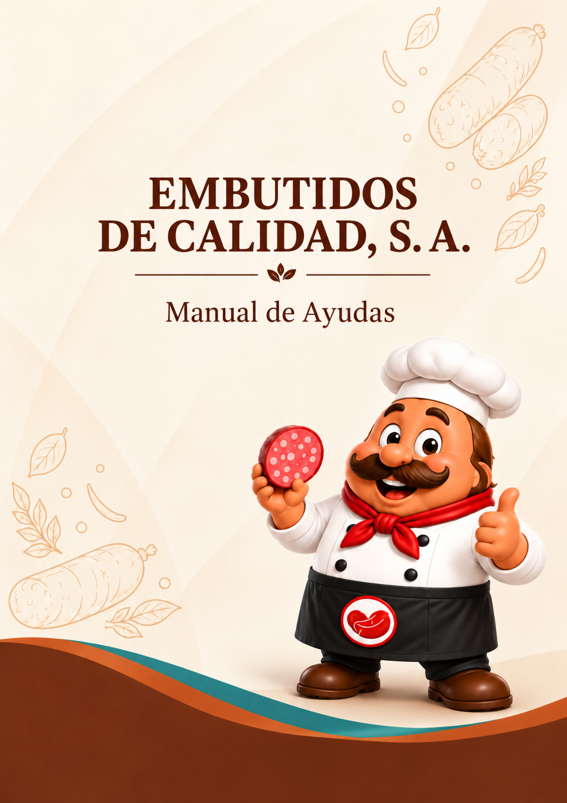
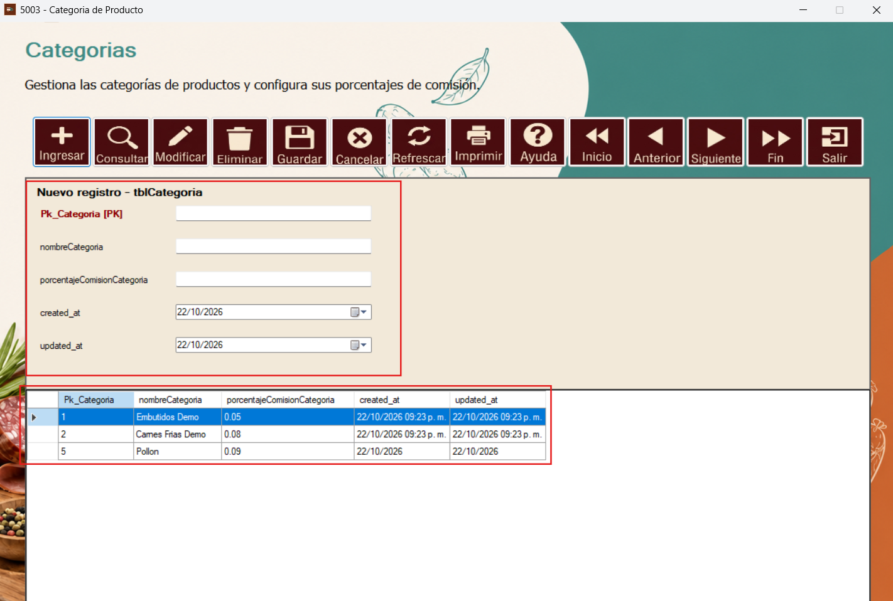
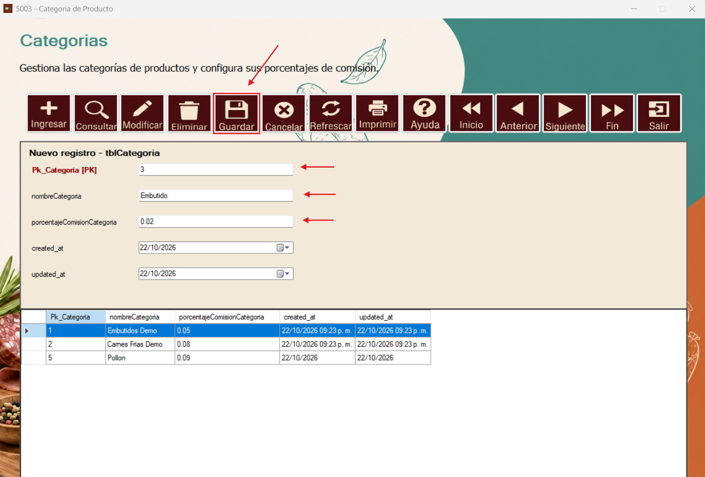
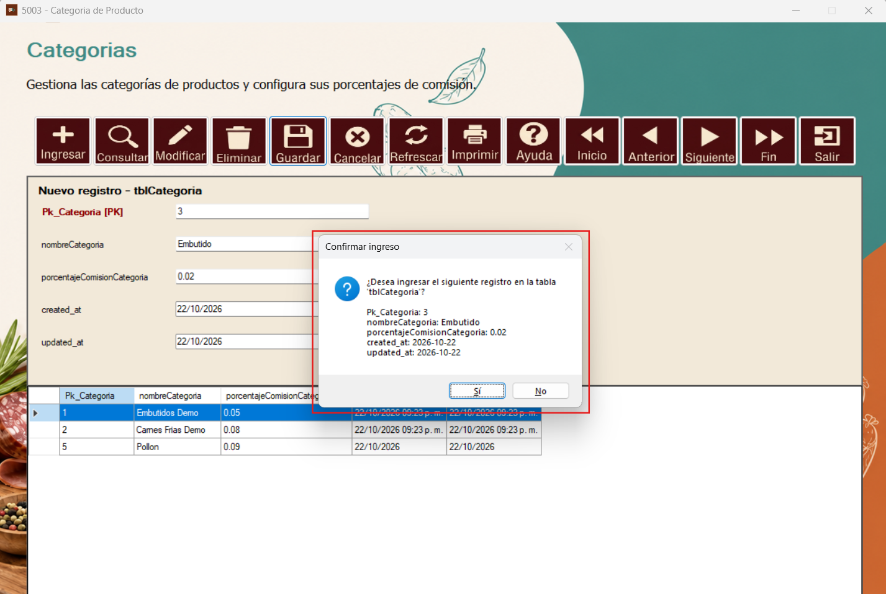
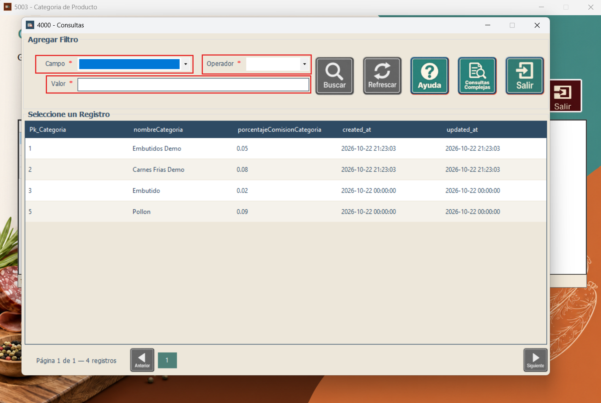
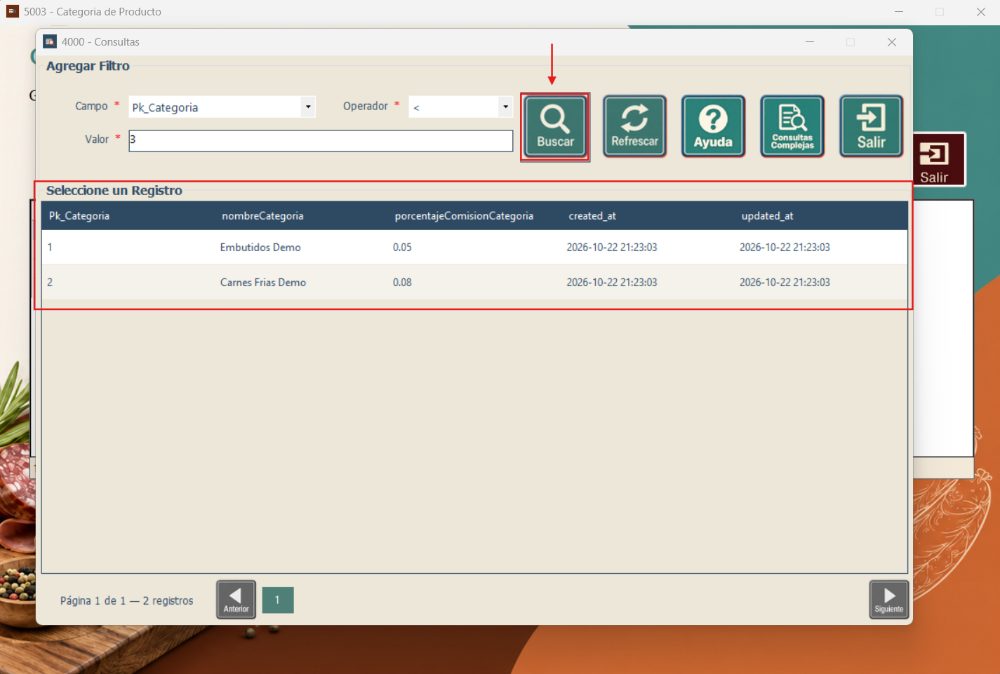
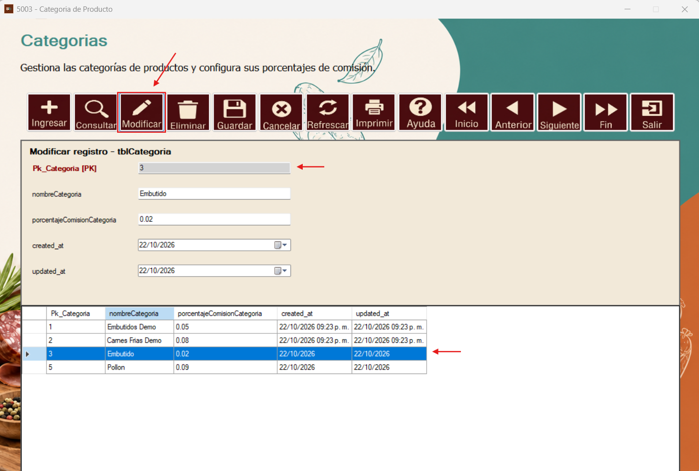
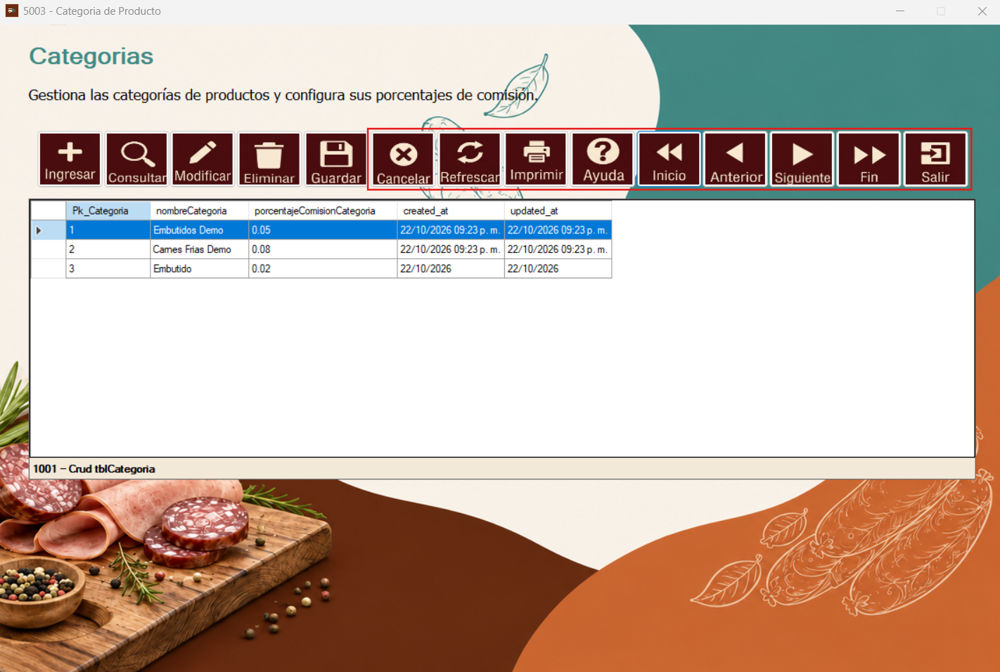

Primero tendremos el botón de “Ingresar”, el cual despliega los campos a llenar para esta tabla, así como también muestra los datos ya ingresados en la parte inferior.

Se ingresan los valores que se quieren registrar y se procede a dar clic sobre el botón “Guardar” para registrar los cambios.

Se despliega una ventana para la confirmación de registro de datos. Se acepta o se cancela según sea el caso.

Después de confirmar el ingreso, el registro aparece en la tabla inferior.
Podremos realizar consultas para buscar algún registro en específico. Para ello se procede a dar clic al botón de consulta.
Se despliega una ventana con campos que se deberán llenar según lo que necesitemos buscar: “Campo”, “Operador” y “Valor”.

Al ingresar los valores que necesitemos buscar, se procede a dar clic al botón de consultar y los resultados se verán reflejados en la parte inferior, aplicando los filtros.

Si se desea modificar algún registro, se debe dar clic en el botón “Modificar”, teniendo seleccionado el registro (ID) que se desea modificar. Se podrán cambiar los valores de este registro, a excepción del ID.

También se cuenta con botones para la navegación entre los registros, así como los botones Refrescar, Imprimir y Salir.
